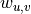
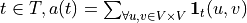
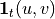
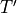
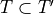
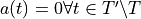
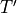
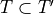
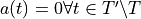

Prepare Data
When the dataset-specific processing are done, the last step of the data prepration is to extract the weighted graph and the timeserie are obtained.
Weighted Graph
The weighted graph G is extracted by “getting rid” of the time to keep only the structure of the data. We define V the set of all vertices in the data. Each interaction (t,u,v) then gives an edge (u,v) in the graph G, and the weight  is the number of occurences with different timestamps of interaction between (u,v)
In practice, we extract it by piping the following commands in bash:
mawk '{print $2","$3;}' # remove the timestamp
sort # sort the data
uniq -c # count the number of occurence of each (u,v)
mawk '{print $2,$1;}' # format the output of uniq
Timeserie
The timeserie a is extracted by “getting rid” of the structure, to keep only the number of interactions at each time. We define T the set of all timestamps in the data, then for each  where  is 1 if the edge (u,v) occurs at time t,
 otherwise.
otherwise.In practice, we pipe the wollowing commands in bash:
cut -d" " -f1 # only keep timestamp
uniq -c # count occurences of each
# timestamps, i.e. number of
# interaction ocurring at this timestamp
mawk '{print $2,$1;}' # format mawk output
Note
The timeserie  used in computation is defined on the set of
timestamps
used in computation is defined on the set of
timestamps  called the event times, i.e. the times where interaction occurs. On this
set, the timeserie is thus never .
We can define the set  with a constant timestamp, with  and

called the event times, i.e. the times where interaction occurs. On this
set, the timeserie is thus never .
We can define the set  with a constant timestamp, with  and
